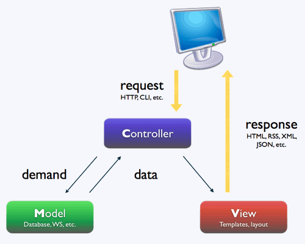

DAI, HTTP
Desarrollo de Aplicaciones para Internet
MVC

Modelo Vista Controlador
Separar en archivos y carpetas distintas (modulos, packages) el código relativo a:
- Base de Datos Model
- Interface de usuario View
- Comunicaciones, lógica Controler
Modelo Vista Controlador

Model
- Interacción con la BD (SELECT, INSERT, UPDATE, DELETE)
- Lógica relacionada con los datos (cuanta más mejor)
- Comunica con el controlador
View
- Donde interacciona el usuario
- Usualmente HTML, CSS
- Comunica con el controlador
- A traves de plantillas (templates)
Controler
- Recibe la entrada del las vistas o urls (routing)
- Procesa los requests (GET, POST, PUT, DELETE)
- Interacciona con el modelo
- Rellena y envia las plantillas
Organizándose
mi_app/
├── app.py
├── requeriments.txt # librerías necesarias
├── templates/ # plantillas html
│ ├── entrada.html
│ └── ...
└── static/ # archivos fijos (assets)
├──css/
├──imagenes/
└──js/
Organizándose
mi_app/
├── run.py
├── requeriments.txt # librerías necesarias
├── mi_app/ # código
│ ├── model.py
│ └── controler.py
├── templates/ # plantillas html (vistas)
│ ├── entrada.html
│ └── ...
└── static/ # archivos fijos (assets)
├──css/
├──imagenes/
└──js/
model.py
Con ORM
from sqlalchemy import Column, Integer, String
from yourapplication.database import Base
class User(Base):
__tablename__ = 'users'
id = Column(Integer, primary_key=True)
name = Column(String(50), unique=True)
email = Column(String(120), unique=True)
def __init__(self, name=None, email=None):
self.name = name
self.email = email
def __repr__(self):
return '' % (self.name)
view.html
Con plantillas y html
<p> My string: {{my_string}} </p>
<p> Value from the list: {{Users[2]}} </p>
<p> Loop through the list: </p>
<ul>
{% for user in Users %}
<li> {{user.name}} </li>
{% endfor %}
</ul>
controller.py
@app.route("/users") # decorador para url (router)
def users():
lista=[]
# Acceso a la BD
for user in Users.objects().order_by('-name').limit(4):
lista.append(user)
# rellena y envia la plantilla
return render_template('users.html', Users=lista)